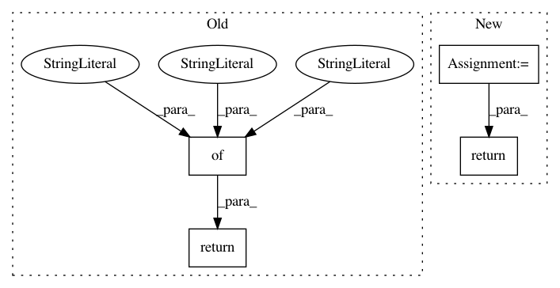

f98382a590955f07c539b5493a5adebba9554417,keras_bert/bert.py,,get_custom_objects,#,97
Before Change
def get_custom_objects():
Get all custom objects for loading saved models.
return {
"Embeddings": Embeddings,
"MultiHeadAttention": MultiHeadAttention,
"FeedForward": FeedForward,
"LayerNormalization": LayerNormalization,
"Transformer": Transformer,
"Masked": Masked,
"Extract": Extract,
"gelu": gelu,
}
def get_base_dict():
Get basic dictionary containing special tokens.
After Change
def get_custom_objects():
Get all custom objects for loading saved models.
custom_objects = get_encoder_custom_objects()
custom_objects["Embeddings"] = Embeddings
custom_objects["Masked"] = Masked
custom_objects["Extract"] = Extract
custom_objects["gelu"] = gelu
return custom_objects
def get_base_dict():
Get basic dictionary containing special tokens.
In pattern: SUPERPATTERN
Frequency: 3
Non-data size: 4
Instances
Project Name: CyberZHG/keras-bert
Commit Name: f98382a590955f07c539b5493a5adebba9554417
Time: 2018-11-08
Author: CyberZHG@gmail.com
File Name: keras_bert/bert.py
Class Name:
Method Name: get_custom_objects
Project Name: rail-berkeley/softlearning
Commit Name: 3fdaafae100cb992b86f8663cd7cc45957efeb4e
Time: 2018-05-27
Author: ben-eysenbach@users.noreply.github.com
File Name: softlearning/algorithms/sac.py
Class Name: SAC
Method Name: get_snapshot
Project Name: YerevaNN/mimic3-benchmarks
Commit Name: 790b528716d22bafea946f6228509b202dea09b7
Time: 2017-09-05
Author: harhro@gmail.com
File Name: mimic3models/rerun.py
Class Name:
Method Name: process_single